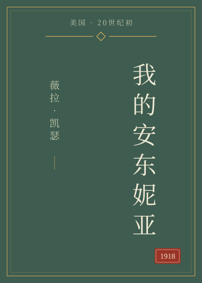
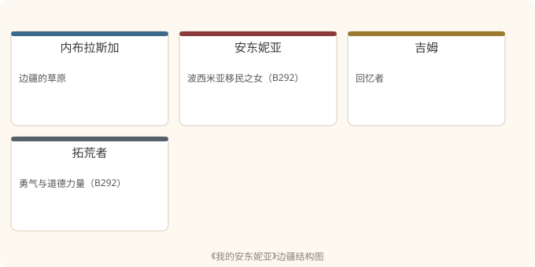

我的安东妮亚
一、基本信息
| 作者 | 薇拉·凯瑟 |
|---|---|
| 成书/出版 | 1918年（Britannica：My Ántonia (1918), which has frequently been adjudged her finest achievement） Willa Cather — Encyclopaedia Britannica（百科全书） |
| 国别/地区 | 美国 |
| 时代 | 近代 · 20世纪初 |
| 体裁 | 长篇小说 |
| 语言 | 英语 |

《我的安东妮亚》边疆结构图（主题·结构图）
二、创作背景
Britannica（B292）：'It tells the story of Ántonia Shimerda, a daughter of Bohemian immigrants on the Nebraska frontier'（写内布拉斯加边疆波西米亚移民之女安东妮亚——B292）；'With O Pioneers! (1913) and My Ántonia (1918)……'（B292：characteristic themes of frontier spirit and courage——通说待核）。
地位（B292）：'frequently been adjudged her finest achievement'（常被裁定为其最佳成就）。
三、内容脉络
吉姆·伯登的回忆：波西米亚移民女安东妮亚在内布拉斯加边疆的一生（通说待核）。
'安东妮亚'：土地与母性（通说待核）。
四、主要人物表
| 人物 | 身份 | 说明 |
|---|---|---|
| 安东妮亚·希默尔达 | 移民之女 | （B292） |
| 吉姆·伯登 | 叙述者 | （通说待核） |
五、主题与艺术特点
- 移民与边疆（B292）。
- '安东妮亚'：土地的生命力（通说待核）。
- 地域主义（B292：unique regionalism——作者级）。
六、影响与评论
- Britannica：'frequently been adjudged her finest achievement'（B292）。
Willa Cather — Encyclopaedia Britannica（百科全书） - Britannica：'unique regionalism captured the essence of the American West'（B292 作者级引述）。
Willa Cather — Encyclopaedia Britannica（百科全书）
七、阅读建议
难点
- 移民史（波西米亚）。
- 回忆录框架。
- 《我的安东妮亚》（人民文学出版社/上海译文版本，通说待核）。
- 英文原版（公有领域）。
先《啊，拓荒者！》后本作。
八、待核实
- 1918年出版（Houghton Mifflin说）核对。
- 安东妮亚/吉姆人名核对。
- 'K'字结尾的暗示待核。
本页主要来源
薇拉·凯瑟的其他收录作品：我的安东妮亚